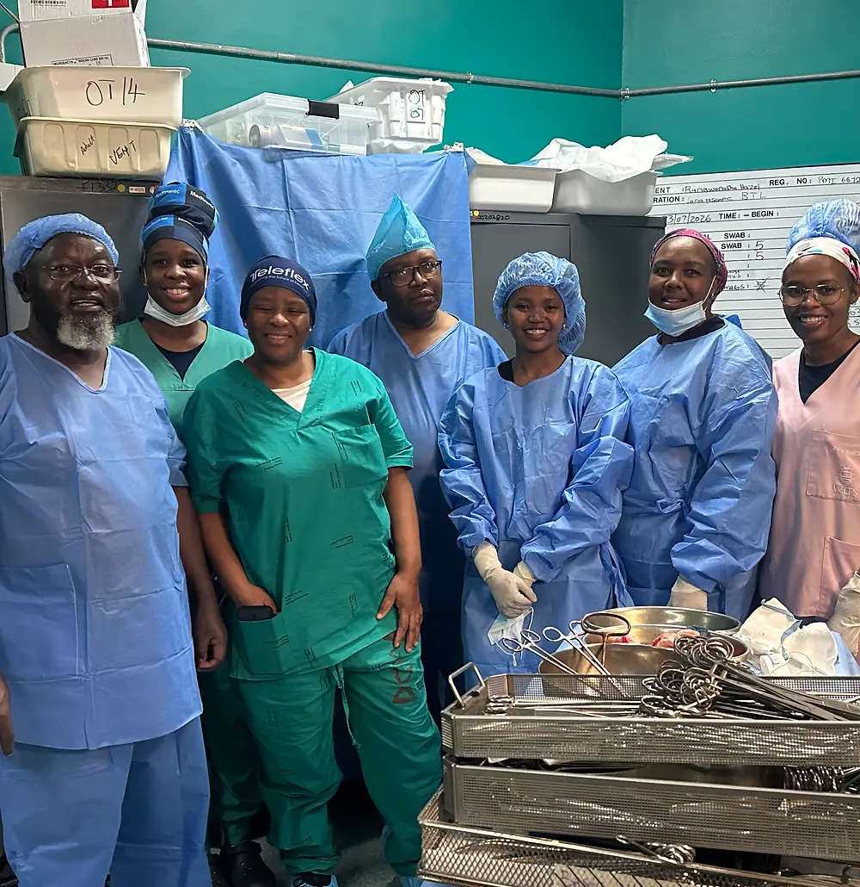
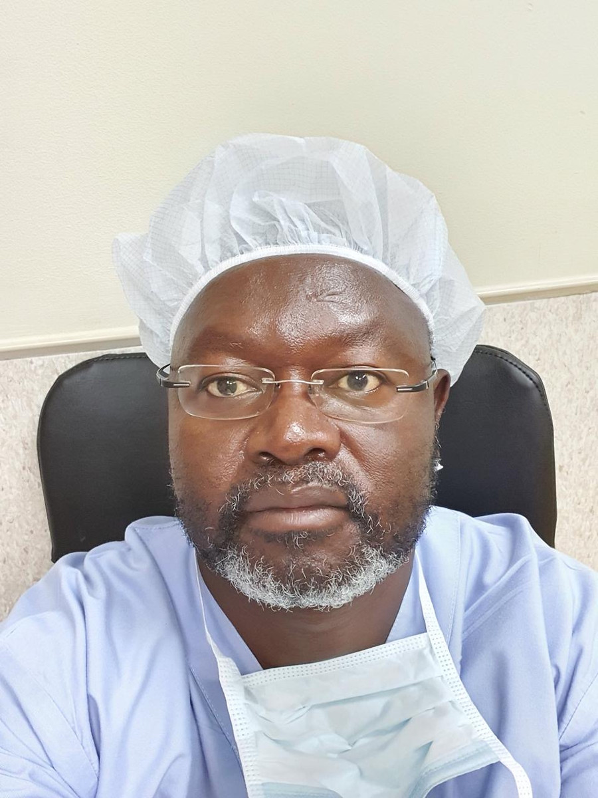

Gynaecological care
Specialist obstetric and gynaecological consultations are currently provided through Dr Shava’s private practice.
Make an enquirySpecialist care · Medical education
Munana Health is being developed to bring specialist gynaecological expertise, practical medical education and trusted health information closer together.

Clinical experience
shared with purpose.
Clinical services are currently provided through Dr Shava’s private practice while Munana Health’s broader offering is being developed.
Our purpose
Munana Health exists to connect clinical excellence with education so that specialist knowledge can benefit patients, healthcare professionals and the wider community.
Founded by specialist obstetrician and gynaecologist Dr Joseph Shava, Munana is being developed as a platform for compassionate specialist care, practical medical education and clearer public understanding of gynaecological health.
Its purpose reaches beyond the consultation room: to support people seeking care, strengthen the students and professionals who provide it, and make responsible health information easier to understand.
What we do
One evolving platform, shaped around clinical expertise and useful learning.
Specialist obstetric and gynaecological consultations are currently provided through Dr Shava’s private practice.
Make an enquiryLearning, mentorship and professional development designed for medical students and healthcare professionals.
Clear, responsible information that helps people better understand gynaecological health and informed care.

Founder & clinical lead
Specialist Obstetrician & Gynaecologist
Dr Joseph Shava is a specialist obstetrician and gynaecologist with more than three decades of clinical experience and a particular interest in minimally invasive gynaecological surgery.
He graduated with an MBChB from the University of Zimbabwe in 1990 and completed his internship at Parirenyatwa and Harare Hospital, now Sally Mugabe Central Hospital. He undertook postgraduate training in South Africa and qualified as a specialist in obstetrics and gynaecology in 1997.
In 2004, Dr Shava was certified as an advanced vaginal surgeon at the Royal Free Hospital in the United Kingdom. He later pursued further training in endoscopy and minimally invasive gynaecological surgery through the European Society for Gynaecological Endoscopy in Belgium.
Dr Shava is based at Netcare Lakeview Hospital in Benoni, where he serves as resident consultant gynaecologist and chair of the Physician Advisory Board. He has also made teaching and mentorship a central part of his work. He co-founded the Zimbabwe Society of Gynaecological Endoscopy in 2018 and was tasked with establishing its gynaecological endoscopy training programme in 2021. He serves as a chief mentor and as a member of the academic faculty of the University of Zimbabwe International Centre for Surgical Simulation.
Qualifications & professional training
Recognition
2025
Munana Health received the Excellence in Health Award at the 2025 South Africa–Zimbabwe Business Expo.
The recognition marks an important milestone in Munana’s development and reflects the purpose guiding its work: bringing clinical expertise, medical education and community impact together.
Get in touch
Contact Dr Shava’s private practice for clinical enquiries, or email Munana Health about its developing education and healthcare work.